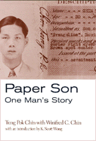

<body bgcolor="#FFFFFF" text="#000000" link="#0000FF" vlink="#CC0000" alink="#CC0000"><center><hr width="350" size="1" align="center" noshade>A rare, first person account of an experience shared by thousands of Chinese<hr width="350" size="1" align="center" noshade><p><a href="https://cdcshoppingcart.uchicago.edu/Cart/ChicagoBook.aspx?ISBN=9781566398008&&PRESS=temple" target="_top">Buy this book!</a> | <a href="https://cdcshoppingcart.uchicago.edu/Cart/Cart.aspx?PRESS=temple" target="_top">View Cart</a> | <a href="https://cdcshoppingcart.uchicago.edu/Cart/Cart.aspx?PRESS=temple" target="_top">Check Out</a></p><p></p></center><!--none//--><h1>Paper Son</h1>
<H2>One Man's Story</H2>
<H2><!-- With an Introduction by K. Scott Wong --></H2>
<h3>Tung Pok Chin with Winifred C. Chin, introduction by K. Scott Wong</h3>
<P>cloth 1-56639-800-2 $74.50, Oct 00, <FONT COLOR=#990033>Out of Stock Unavailable</FONT>
<br>paper 1-56639-801-0 $28.95, Oct 00, <FONT COLOR=#990033>Available</FONT>
<br>Electronic Book 1-59213-812-8 $28.95 <FONT COLOR=#990033>Out of Stock Unavailable</FONT>
<BR> 184 pp
5.5x8.25
16&nbsp;halftones
</P><h3 align="center"><P><font color="#996633">Outstanding Academic Title, <i>Choice</i>,
2001</font></P>
</H3>
<BLOCKQUOTE><I>"This rare, engaging, and often poignant firsthand chronicle of Chin's efforts to create a life for himself in the US while supporting his family in China effectively demonstrates how the continual fear of being exposed as a "paper son" and the changing social, international, and political developments from the 1930s through the 1950s fundamentally shaped Chin's opportunities and experiences. ...this clearly written and accessible autobiography constitutes a rich resource for faculty and students interested in US social history and immigration as well as Asian American studies, and is highly recommended for libraries developing comprehensive Asian American studies collection, or diversifying their collections in US social history, immigration, and labor."</I>
<br>&#151<b><I>Choice</I></b><I></I></BLOCKQUOTE>
<p>In this remarkable memoir, Tung Pok Chin casts light on the largely hidden experience of those Chinese who immigrated to this country with false documents during the Exclusion era. Although scholars have pieced together their history, first-person accounts are rare and fragmented; many of the so-called "Paper Sons" lived out their lives in silent fear of discovery. Chin's story speaks for the many Chinese who worked in urban laundries and restaurants, but it also introduces an unusually articulate man's perspective on becoming a Chinese American.
<p>Chin's story begins in the early 1930s, when he followed the example of his father and countless other Chinese who bought documents that falsely identified them as children of Chinese Americans. Arriving in Boston and later moving to New York City, he worked and lived in laundries. Chin was determined to fit into American life and dedicated himself to learning English. But he also became an active member of key organizations&#151a church, the Chinese Hand Laundrymen's Alliance, and Chinese Consolidated Benevolent Association&#151that anchored him in the community. A self-reflective and expressive man, Chin wrote poetry commenting on life in China and the hardships of being an immigrant in the United States. His work was regularly published in the <I>China Daily News</I> and brought him to the attention of the FBI, then intent on ferreting out communists and illegal immigrants. His vigorous narrative speaks to the day-to-day anxieties of living as a Paper Son as well as the more universal immigrant experiences of raising a family in modest circumstances and bridging cultures.
<p>Historian K. Scott Wong introduces Chin's memoir, discussing the limitations on immigration from China and what is known about Exclusion-era Chinese American communities. Set in historical context, Tung Pok Chin's unique story offers an engaging account of a twentieth-century Paper Son.
<BR>&nbsp;<h2>Excerpt</h2><P>Excerpt available at <a href="http://www.temple.edu/tempress">www.temple.edu/tempress</a></p>
<BR>&nbsp;<h2>Reviews</h2>
<p><i>"What a stunning book! Mr. Tung Pok Chin was a self-taught poet philosopher steeped in the Laundries and restaurants of Boston and New York City during the nightmarish years of the Chinese exclusion and McCarthy red-baiting. He writes with a penetrating insight that transports the reader into the working lives of isolated men trying their best to survive a hostile racist world while somehow saving pennies to support their loved ones still in Guangdong. This is far more than the story of one man: he is writing the truth of generations of paper sons and paper daughters."</i>
<br>&#151<b>Professor John Kuo Wei Tchen</b>, New York University, and co-founder of the Museum of Chinese in the Americas
<p><i>"For scholars and students, </i>Paper Son<i> is valuable because it documents a life during an era that is perhaps the least studies in Chinese American History, the 1930s through the mid-1970s�.Chin's account not only reveals the details and strategy of how he conducted his 'paper life'; it also puts human flesh to our skeletal knowledge of how papers sons lived their day-to-day lives during the Great Depression, World War II, and the McCarthy Era�. Chin's memoir relates this information in a manner that is immediately accessible, warm, reflective, human, and insightful. No doubt his writing style reveals a great deal about his personality, but it also reminds us that much of our history of the exclusion era is faceless."</i>
<br>&#151<b>K. Scott Wong</b>, from the Introduction
<p>Read a <a href="../authors/1530_review.pdf">review</a> from <I>The Journal of American Ethnic History</I>, Winter 2002, written by Erika Lee (pdf).
<p><i>"Having read a number of autobiographies and biographies of Asian American that came before me, </i>Paper Son<i> reaffirms the notion that we are lucky to have not gone through what they had experienced.... At this time when [the Asian American Curriculum Project] is trying to promote new Asian Pacific American poets and their writings, it's good to be featuring a book on one of our community's pioneering poets."</i>
<br>&#151<b><a href="http://www.asianamericanbooks.com/newslets/nl0106.htm#paperson" target="new">Asian American Books newsletter</a></b>
<BR>&nbsp;<h2>Contents</h2><P>
<p>Preface &#150 Winifred C. Chin
<br>Introduction: Paper Lives &#150 K. Scott Wong
<br>Prologue
<p><b>Part I: The Early Years</b>
<br>Gold Mountain
<br>My Village
<br>A Gold Mountain Man
<br>Between Father and Son
<br>Everybody for Himself
<br>Fighting Chinese City Hall
<br>The Cheating Game
<br>Turning to Wisdom
<p><b>Part II: Gold Mountain Dreams</b>
<br>A Navy Man
<br>A New Outlook
<br>The �Confession Period�
<br>A Bitter End, a Bright Start
<br>A Paper Son�s Duty
<br>Under Suspicion
<br>A Dream in Flames
<br>Chinese Communism
<p><b>Part III: Becoming American</b>
<br>Paranoia
<br>Assimilation
<br>The Homecoming
<br>The Problem with Confession
<br>The Final Visit
<br>Writing Again
<br>The Lunar New Year
<br>Living in the Present
<p>Postscript &#150 Winifred C. Chin
</P><BR>&nbsp;<H2>About the Author(s)</H2>
<P><B>Winifred Chin</B> is a Research Affiliate with the Asian/Pacific American Studies and Research Institute at New York University.</P>
<BR><H2>Subject Categories</H2>
<p><A HREF="/tempress/asian_amer.html" TARGET="_top">Asian American Studies</a>
<BR><A HREF="/tempress/biography.html" TARGET="_top">Biography/Memoir/Autobiography</a>
</p>
<BR><h2 class="inpageheading">In the series</H2>
<P><I><a href="http://www.temple.edu/tempress/asam_history.html" onMouseOver="window.status='Click for other books in this series!'; return true;" onMouseOut="window.status=''; return true;" target="_top">Asian American History and Culture</a></i>, edited by K. Scott Wong, Linda Trinh V�, and Cathy Schlund-Vials.
</p><p>Founded by Sucheng Chan in 1991, the <I>Asian American History and Culture</I>, series has sponsored innovative scholarship that has redefined, expanded, and advanced the field of Asian American studies while strengthening its links to related areas of scholarly inquiry and engaged critique. Like the field from which it emerged, the series remains rooted in the social sciences and humanities, encompassing multiple regions, formations, communities, and identities. Extending the vision of founding editor Sucheng Chan and emeriti editor Michael Omi and David Palumbo-Liu, series editors K. Scott Wong, Linda Trinh V�, and Cathy Schlund-Vials continue to develop a foundational collection that embodies a range of theoretical and methodological approaches to Asian American studies.</p>
<p align="center"><a href="https://cdcshoppingcart.uchicago.edu/Cart/ChicagoBook.aspx?ISBN=9781566398008&&PRESS=temple" target="_top">Buy this book!</a> | <a href="https://cdcshoppingcart.uchicago.edu/Cart/Cart.aspx?PRESS=temple" target="_top">View Cart</a> | <a href="https://cdcshoppingcart.uchicago.edu/Cart/Cart.aspx?PRESS=temple" target="_top">Check Out</a></p><p><font face="Arial" size="1"><a href="copyright.html" onMouseOver="window.status='Web Copyright Policy';return true;" onMouseOut="window.status=''" title="Web Copyright Policy">&copy;</a> 2015 <a href="http://www.temple.edu" target="new" onMouseOver="window.status='Link to Temple University home page';return true;" onMouseOut="window.status=''" title="Link to Temple University home page">Temple University</a>. All Rights Reserved. http://www.temple.edu/tempress/titles/1530_reg.html</font></p>